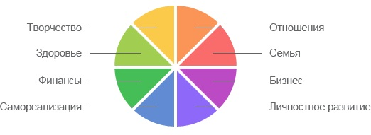
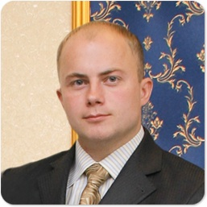
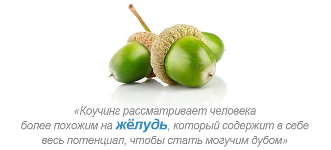

Получи
БЕСПЛАТНУЮ
коуч-сессию и измени свою жизнь сегодня!
ЗАПОЛНИ АНКЕТУ
и получи
БЕСПЛАТНУЮ
коуч-сессию
(или подарок от
Школы Бизнеса и Личностного Развития)
Какие возможности дает бесплатная коуч-сессия?
-
соединение со своей миссией и видением своей жизни
-
пробуждение в себе истинного внутреннего гения
и признание своего величия и потенциала
-
развитие отношений с самим собой и с окружающими
-
углубление своих личных и профессиональных способностей
проникновения в суть и уровень компетентности
-
становление более эффективным, делая вклад в других
Колесо жизни - это уникальная модель Ваших ценностей!
Ее полнота и баланс делают человека Успешным!


Анатолий Лучинский
Психолог. Профессиональный сертифицированный коуч.
Сертифицированный НЛП-Мастер. Бизнес-тренер. Консультант.
-
Образование в НЛП, тренерстве и коучинге:
-
«Раскрытие Лидерского Потенциала»: Майкл Холл, 2010 г.
- «Социальная панорама в коучинге, психотерапии и тренерстве»: Лукас Деркс, 2012 г.
- «Построение наивысшего благосостояния»: Майкл Холл, 2008 г.
- «Тренинг Тренеров»: Френк Пьюселик, 2007 г.
- «Коучинг Команд»: М. Аткинсон, 2012 г.
- «Глубинный Коучинг: Пробуждение Духа»: М. Аткинсон, 2012 г.
- «Наука и искусство коучинга»: М. Аткинсон, 2012 г.
- «Тренинг Тренеров НЛП-Практик»: Е. Лещенко, 2007 г.
- «Металидерство»: Роберт Дилтс, 2006 г.
- «Новый Код НЛП»: Е. Лещенко
- «Нейро-семантика наивысшего благосостояния»
- «НЛП-Мастер»: Е.Лещенко
- «Метод Сильва» Полный курс : Анжела Срибная 2011г.
- «Метод Сильва» «Ты достоин» : Анжела Срибная 2011г.
- «Лидер-Класс» 1-4 ступень : Татьяна Мурат 2007г.
- «Самоконтроль мышления»: Анжела Срибная 2011г.
- «Успех зависит от тебя»: Анжела Срибная 2011г.
- «Психогеография группы: модели НЛП в групповой работе»: К. Коваленок, 2011 г.
- «Тренинг Модераторов» (Навыки презентации, командообразования,
- управления временем, лидерство): Т. Мурат 2007г
- «Модели человеческой мотивации»: Френк Пьюселик, 2011 г.
-
Образование в бизнесе и личностном развитии:
- «Управление проектами в организациях», Университет КРОК «Продвинутый Курс»
г. Киев, 2011 г.
- «Управление Изменениями», г. Киев, 2003 г.
- «Управление Временем», г. Киев, 2003 г.
- «Ментальные Карты», Центр НЛП в образовании, г. Москва, 2002 г.
- «Основной Курс» (Life Spring), г. Киев, 2003 г.
- «Искусство продаж и обслуживания клиентов», г. Киев, 2001 г.
- «Предпринимательство и экономика», Junior Achievement (USA), г.Киев, 1993-1995 гг.
- Высшая Школа Менеджмента «Менеджмент» СумГУ, 1996 -1998 г. Сумы
- Экономика предприятия « Экономист» СумГУ, 2001-2004 г. Сумы
- Финансы предприятия « Финансы» СумГУ, 2004 – 2006 г. Сумы
- Правоведение «Юрист» СумГУ, 2005 – 2006, г. Сумы
- Практическая психология « Практический психолог», МАУП г.Киев, 2011 -2013

Сэр Джон Уитмор,
автор термина Коучинг в бизнес контексте (начало 90-х гг.)
«В общем смысле,
коучинг
— это процесс, в ходе
которого отдельным людям и
целым коллективам помогают действовать продуктивно и максимально
реализовывать свои способности
Он включает раскрытие и использование сильных сторон людей, поддержку
их
в преодолении личных барьеров и ограничений в достижении лучших результатов,
а также повышение результативности их работы в команде. Таким образом,
эффективный коучинг требует акцента как на задаче, так и на отношениях между
людьми».
Роберт Дилтс
«Лайф-коучи
помогают людям открывать для себя то, чего они хотят достичь
в жизни, а также находить в себе силы для этого. Лайф-коучинг помогает людям
находить собственные ответы, а не искать решения вне себя. Этот процесс
не предполагает
обучения тому, что вы уже знаете, и не приемлет подхода
к клиентам как к ученикам. Вместо этого лайф коучинг дает людям силы
изобретать что-то новое — думать так, как они не думали раньше, и говорить то, что они раньше не говорили».
«Профессиональный коучинг — это непрерывные
профессиональные
отношения, которые помогают людям создавать выдающиеся результаты в своей
личной жизни, карьере, бизнесе или организации. Посредством процесса коучинга
клиенты углубляют свои знания, улучшают свой КПД (коэффициент полезного
действия) и повышают качество своей жизни».
Чем коучинг отличается от консультирования?
Коучинг — это форма консультирования.
Особенность заключается в том, что
коуч остается (сопровождает) с клиентом, чтобы клиент действительно
осуществил новые навыки, изменения и цели, чтобы убедиться, что они
воплощаются в жизни.
Чем коучинг отличается от терапии?
Коучинг — не терапия. Коуч не работает с «проблемами», не
обращается
к прошлому и не выясняет причин человеческого поведения. Коуч оставляет это
Клиентам для их собственного познания, помогая им продвигаться вперед,
устанавливать свои личные и профессиональные цели, которые обеспечат им
такую жизнь, о которой они мечтают.
Чем коучинг отличается от спортивных тренировок?
Коучинг включает в себя некоторые принципы тренировки перед спортивными
соревнованиями, таких как, взаимодействие, продвижение к цели, стремление все
делать лучше. Но в отличие от тренировки, большая часть профессионального
коучинга — не для победы над кем-то (по принципу «Выигрыш/Проигрыш»).
Коуч усиливает навыки клиента, которые позволят ему одерживать победы.
Это — «Выигрыш/Выигрыш».
Кто? Зачем? Когда? Почему?
Кто заказывает коучинг?
Коучинг заказывают Предприниматели, Собственники Бизнеса, Директора компаний,
Специалисты и Профессионалы, а также люди, желающие перемен в своей жизни.
Всех этих людей, несмотря на различия в сферах деятельности, опыта и компетенции,
объединяет стремление к постоянному совершенствованию, повышению
эффективности, желание добиваться большего и быстрее. Все они успешные люди
и выбирают быть и оставаться успешными.
Зачем заказывают коучинг?
Коучинг заказывают для того чтобы:
- Добиваться более высоких результатов в жизни и карьере;
- Повысить КПД: использовать свое время, улучшить качество результатов
и повысить эффективность деятельности;
- Выработать новые навыки и привычки: профессиональные, межличностные
и личностные;
- Перестать играть в игры «избегание», «оправдание», «откладывание» и прочие
и начать играть в «активное достижение», «осознанный и ответственный выбор»,
«автор и создатель своей жизни» и т.д.;
- Определить систему целей и ценностей на ближайшие 2, 3, 5, 10, 20 лет,
выстроить реальный план реализации всех целей, обнаружить все ресурсы
и приступить к реализации плана;
- Осознать или выработать свое предназначение, призвание и Миссию на этой земле.
Когда заказывают коучинг?
Люди заказывают коучинг в различные периоды своей жизни.
Особенно эффективным коучинг оказывается, когда:
- Наступили или ожидаются серьезные перемены в жизни;
- Необходимо принимать важные, серьезные решения;
- Важно выработать новые профессиональные качества и приобрести или
усовершенствовать навыки;
- Необходимо выработать стратегию и создать конкретный план достижения целей;
- Необходимо сделать жизнь более сбалансированной и целостной;
- Необходимо открыть «второе дыхание», «вернуть себе силы» или найти источник
вдохновения;
- Важно осуществить прорыв к новому Качеству Жизни.
Почему заказывают коучинг?
- Коучинг помагает держать фокус внимания на том, что по-настоящему важно
клиенту, и обеспечивает клиента обратной связью, благодаря чему происходит
развитие и совершенствование;
- Коуч сохранит полную конфиденциальность, и с ним можно обговорить и решить
все то, что не оговоришь больше ни с кем (все — значит любые области жизни
и жизнь в целом). Коуч ориентирован только на клиента и его цели;
- Коуч — это производная от хорошего друга, превосходного тренера и
профессионального консультанта, благодаря чему Вы получаете одновременно
больше, чем поддержку трех в одном лице;
- Коуч — это агент перемен, специалист и профессионал в создании изменений,
благодаря чему, изменения, желаемые клиентом, осуществляются в самой лучшей
для клиента форме;
- Коучинг — это наиболее продуктивная форма внешней поддержки и лучшего пока
просто не придумали.
Виды коучинга по стилю: Фристайл коучинг и Процессный коучинг
Фристайл коучинг— это свободный стиль коучинга, когда клиент
формулирует
запрос на одну сессию за несколько дней до или прямо перед сессией. Многие
клиенты, уже знакомые с коучем и коучингом на практике пользуются Фристайл
коучингом, так как эта форма дает больше гибкости, и коуч и клиент еженедельно
фокусируются на самых актуальных задачах клиента.
Процессный коучинг— это стиль коучинга, в основе которой лежит
разработанная коучем (иногда совместно с клиентом) программа развития.
Эта форма удобна для клиентов пока еще слабо знакомых с коучингом,
т.к. помагает клиенту еще перед заключением контракта на коучинг представить
целостно картину процесса и результатов коучинга. Примерами программ,
в основе которых лежит Процессный
коучинг, являются программы
«Новые возможности», «7 секретов мотивации» и «Пробуждение Духа».
3 уровня изменений в Коучинге: Поведенческий, Развития
и Трансформационный
Поведенческий Коучинг — коучинг, нацеленный в первую очередь
на изменения
на уровне поведения. Это достигается за счет выработки навыков,
способностей, привычек, усвоения и тренировки новых стратегий поведения.
(Примеры подобных навыков: проведение совещаний, делегирование,
презентация, холодные звонки, работа с возражениями, создание раппорта,
выяснение потребностей, активное слушание, постановка целей,
создание ресурсного состояния и пр.)
Коучинг Развития — коучинг, работающий с эволюционым
развитием,
развитием личности. На этом уровне осознаются базовые Потребнности
(и их отличия от обязанностей и необходимостей), глубинные Ценности
(и их отличия от возможностей и навязанных стандартов), а также создается
долгосрочная Система Целей — стратегия достижения желаемых результатов
во всех областях жизни клиента. Здесь также планируются и разрабатываются
способы приобретения новых свойств и качеств личности, для большей
целостности.
Трансформационный Коучинг, работает с революционными
изменениями.
Трансформационый уровень — затрагивает Бытие Человека, его Предназначение
и Миссию на Земле. Изменения на этом уровне способны в корне и быстро
изменить направление всей жизни человека. Здесь коучинг работает с Миссией
и предназначением, а также с изменением ограничивающих убеждений
и принятием координальных решений для полной самореализации Человека
посредством Пути к Миссии.
4 основных вида коучинга по форме взаимодействия:
- Очный — коуч-сессии проходят при личной встрече клиента с коучем.
- Телефонный — коуч-сессии проходят по телефону.
- Видеочат — коуч-сессии проходят с использованием Skype и Chate, etc.
- Дистанционный — без личного контакта: e-mail, телеклассы, подкасты, тесты,
задания, отчеты, etc.
- Смешанный — использует все или некоторые из вышеперечисленных форм.
По количеству участников:
Индивидуальный коучинг и Групповой коучинг, Командный коучинг, Семейный коучинг.
Индивидуальный Коучинг — это работа Коуча и Клиента один на
один с запросом, целью или над программой развития клиента.
Групповой Коучинг — это коучинг или фасилитация группы (от 2
до 15
человек)
по разработанной программе, заранее согласованному плану либо же во фристайл
форме с текущими целями и задачами, которые возникли перед группой.
(Примерами могут служить: Мозговой штурм, SWOT-анализ, Разработка
генеральной стратегии, Создание Миссии и Видения Компании, Повышение
эффективности работы, Создание Программы качества, Анализ Рисков и создание
плана реагирования, Улучшение навыков продаж и качества обслуживания
клиентов и пр.)
Частным примером группового коучинга может быть
Командный коучинг
и
Семейный коучинг
, когда на сессии присутствует от 2-х участников.
Соответственно, командный коучинг работает с целями команды,
семейный коучинг работает с целями семьи.
Получи
БЕСПЛАТНУЮ
коуч-сессию и измени свою жизнь сегодня!
ЗАПОЛНИ АНКЕТУ
и получи
БЕСПЛАТНУЮ
коуч-сессию
(или подарок от
Школы Бизнеса и Личностного Развития)
Какие возможности дает бесплатная коуч-сессия?
-
соединение со своей миссией и видением своей жизни
-
пробуждение в себе истинного внутреннего гения
и признание своего величия и потенциала
-
развитие отношений с самим собой и с окружающими
-
углубление своих личных и профессиональных способностей
проникновения в суть и уровень компетентности
-
становление более эффективным, делая вклад в других